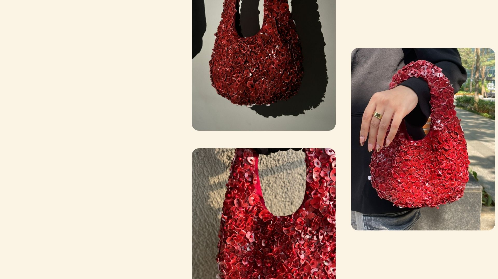

The
handbag
Created a contemporary handbag by combining recycled plastic and fabric. Plastic circles were cut from containers, heat-shaped, spray-painted Mars Red, and hand-stitched onto cotton panels. The bag is finished with a satin inner lining and a thin foam layer for structure, resulting in a durable, stylish accessory suitable for multiple occasions.